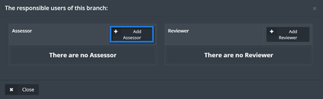
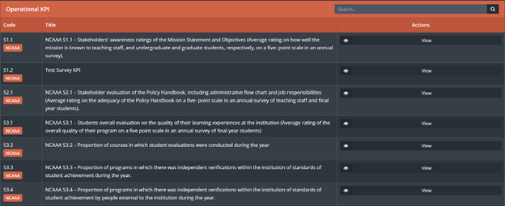
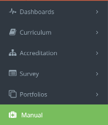

Faculty & Staff
Table of Content ¶
1. Log-in and Header ¶
- To access Jadeer, first you will have to type URL provided by the institution.
- Enter the username and the password.
- Click on Sign in
1.1. Jadeer page header ¶
|
|
|
|
|
|
|
|
1
|
2
|
6
|
5
|
4
|
3
|
-
Institution name
-
Language: click on this button to navigate between Arabic and English language.
-
Notification button: Show user directed activities and assignments.
-
Click on “notification” button, then choose required notification by clicking on it.

-
-
Messages: full functioning e-mailing functionality.
-
Click on ”messages”.
-
Click on Inbox to check if there are any messages.
-
To send a message click on ”new email” button.
-
Enter needed message body, subject and the user then click on ”Send”.
-
-
Semester: Click on ”semester” to choose required semester to manage.
-
User name: contains two parts.
-
Profile: Click on ”profile” to access user personal page.

-
User basic information will appear to view; user will be able to edit his\her information.
-
Log out: to Log the user out of jadeer.
-
2. Dashboards ¶
This module will give the user a clear detailed information about his\her courses along with charts, it also shows tasks and surveys forwarded to the user to be done.
-
Access the dashboard by clicking on” dashboard” button from the main menu.
-
Click on” personal” button to access personalinformation, and view tasks and survey forwarded.

-
Personal page shall appear for the user, along with tasks and surveys (if there is any).
-
Click on” Take survey” button to fill up survey assigned.

-
Fill up the survey, when done click on” finish”.
-
Manage the tasks from tasks tab, assign a task to another user by clicking on ”add new” button.
- Fill up required information, when done click on ”Send” button.
-
Click on ”general” to see general information about the institution.
3. Accreditation ¶
Through this module the user will be able to control the accreditation process assigned to him\her.
-
Access the module by clicking on ”Accreditation” button, then choose the sub-category required.
-
Click on ”manage” to access assigned forms.

-
There are function buttons to help the user managing the forms.

- Set a due date.
-
Assign a user to fill or manage the forms.
-
Click on the ”add user” button, then choose whattype of user you want to add.

-
find the required user by searching the users name, select the users name then click on add.
-
Click on the ”add user” button, then choose whattype of user you want to add.
-
Edit forms button.
-
Click on edit forms button, then fill up or edit the form as needed, when done click on ”Save Changes” to save the form without
marking it as finished (to be finished later), or click on ”Save and finish” to save the form and mark it as finished.
-
to retrieve a previous history for the form, click on the ”history” button top right of the form

-
the user will be able to see both forms, the current form and the chosen form from history function, every change that has
been made on the form will be reflected as a log along with the date and time.
- Change or keep the needed information, then click on ”Save Changes”.
-
Click on edit forms button, then fill up or edit the form as needed, when done click on ”Save Changes” to save the form without
marking it as finished (to be finished later), or click on ”Save and finish” to save the form and mark it as finished.
-
View the form.
-
the user will be able to view the current form by clicking on ”View” button.
-
the user will be able to view the current form by clicking on ”View” button.
-
Send to reviewer.
- Simply click on ”Send to reviewer” button to send chosen forms to be reviewed
-
Download form.
-
Click on download form button.
- Choose form download type, Microsoft word or pdf.
-
Click on download form button.
-
Forms will have indicators next to them, it goes as follow,
-
User can see general information about the institution by clicking on ”statistics” button, located in accreditation drop
menu.
-
File Repository is a file management.
The user could save and keep his important files and documents or uses public documents shared on SID instead of uploading the files every time needed.
-
Faculty will have view options on KPI`s by clicking on KPI`s button located in accreditation drop menu.

Reviewer ¶
The Reviewer part from the Accreditation module is a full flow for the reviewing process within the university, as the user will have the ability to monitor and manage the reviewers and the reviewing process as a whole.
-
Click on Reviewer sub-module from Accreditation drop-down menu.
-
User (Reviewer) will be able to see all assigned tasks and forms to him/her.
- User will have the ability to update his/her information and write down general notes and recommendations by clicking on “Update Info” button
-
To access the assigned forms to be reviewed click on “View” button located next to Documents To Review.
-
Access the required form/s, then fill the required information
- When done click on “Save”
-
If the Reviewer is assigned to review a program, he/she will have access to these programs to write his/her recommendations
-
Click on “Recommendations” to write a recommendation, then click on “Add Recommendation”
-
Type down the recommendations, when done click on “Save”
-
Reviewer will see the progress that has been made based on his/her recommendations and will have the ability to edit the recommendations as shown below
4. Survey ¶
This module allows the user to Access Assigned surveys to him\her to check the results.
-
Access survey module by clicking on ”survey” button from main menu.
-
Click on the required survey then choose to see summery or a detailed summery.
5. Curriculum Mapping ¶
The goal of this module is to have a defined set of PLOs and CLOs (Course Learning Outcomes) mapped together. This is a defined set of requirements for all courses in the university.
Benefits:This module target is to improve courses quality for theuniversity.
-
Access this module by choosing Curriculum mapping from the Curriculum drop-down menu in the main menu.
-
In the Curriculum mapping page, you will have a menu and a filter as shown below,
-
To manage the CLO`s click on ”Course management” button, then click on manage next to required course.
-
Click on learning outcomes.
-
Click on ”manage learning outcomes” button, fill the required fields then click on ”Save”.
-
From the learning outcomes page click on ”Mapping”.
-
Choose the assessment method and map it by clicking on the white boxes next to them, when done click on Save.
-
Click on ”Assessment methods” button then on ”manage assessment methods” button.
-
Fill the required assessment method then click on ”Save”.
-
Click on ”course sections”, then on ”learning outcome mapping” and select the required assessment method in order to add questions to be linked with the
CLO`s and then to set the scale score for that question.
-
Back to Course sections page, click on ”student assessment” button then choose the student and the required assessment method,
to be able to set student score for each question, when done click on ”save”.
-
To have a full report from the steps above click on ”reports” from Curriculum mapping page, and choose the required part to have a
detailed view about it.
Grade Book ¶
This part of the module will help the user to access all the students grades
-
To Access the this part of the module click on “GradeBook“
- Click on “View Sections” next to the required course
-
Click on “View Students” to access list of students next to the required course
-
Click on Curriculum to evaluate students as shown below
-
Click on “Examination” then choose which exam assignment or quiz to access then click on “Save” button
-
List of students and their grades will appear for the user

-
Click on “Report” to generate report of the chosen “Exam”
6. Examination ¶
Examination module is a module that is responsible of all student testing related activities including exams, Quizzes, and assignments with the ability of store and retrieve any questions needed at any time.
-
Click on Examination located in main menu
-
User can manage different type of examination by navigating top bar menu
- To start with the Exam, click on “Exam” button
-
To create a new exam, click on “Create Exam”
-
Fill related information to the exam, then click on “Save”
-
Exam will appear along with its options across as shown below

- View button is used to see all questions in the chosen exam
- Manage button allows the user to edit exam information, same as shown in point number 5
- Design button allows the user to add and delete exam questions
- Delete is to delete the current exam
- Proctors button will allow the user to choose a proctor to manage the exam session
- Manage sections allows the user to choose sections which will be examined
-
To add questions to the exam, click on design then click on Add question
-
Choose the question and write down the question mark, then click on “Save”
-
Repeat the same step above until all the questions has been added to the exam

Note: Total marks for all the questions should be equivalent to the exam mark in order to proceed.
-
Publish button will appear for the user in order to start the exam
-
Click on “Publish” then enter exam time and date, when done click on “Publish”
-
Once the exam starts, User should click on “Student Attendees” located in top bar menu in order to confirm students attendance for the exam

-
Next click on “Student Attendees”
- Click on the check box next to the attended students
-
Once the exam is finished the user will be able to start the correction process for the students by clicking on Correction button
-
Click on “Check Answers” located next to the student’s name
-
Once correction is done click on “Save”

Creating and managing a Quiz has the same steps above but there are two differences
- the user will have two buttons to start and finish the Quiz instead of assigning a time and a date.
- There is no attendance list of the students
-
Click on Quiz located in the top bar menu

-
After Creating a Quiz and adding questions to it, user can start the quiz by clicking on “Start Quiz”
-
Next click on “Ok” to confirm the action
-
To stop the quiz, click on “Stop Quiz”

-
Next click on “Ok” to confirm the action
Creating and managing assignments user will use same steps in the exam but there will be no need to check the attendance for the students
-
Click on assignments, then click on Create Assignment

-
Fill the information then click on “Save”
- Manage the assignment as needed
Question Bank ¶
User can add questions to be used for examinations
-
Click on “Question Bank”
-
Click on “Create Question”
-
Enter the question and fill the rest of the fields
-
User can choose the status of the question from Question Status drop-down menu

-
Question Status
- Private: Only the user who created the question will be able to see the created question
- Show On Public: all the user will be able to see and use created question
-
If the question requires an attachment, user should click on “Assignment Question” then on “Enable Assignment” check box
- When done click on “Save”
-
User will be able to edit the questions by click on “Edit” question

-
User will have the ability link the question to a learning outcome by clicking on “Learning Outcome” button
- Choose the required Learning outcome, when done click on “Save”
Examination Bank ¶
This part of the module allows the user to access previously made exams
-
Click on Examination Bank

-
Choose the required course by clicking on “View Exams” button
-
Click “View” next to the required exam

7. Portfolios ¶
There are three types of portfolios in jadeer:
- Course portfolio: this part of the module will contain information about all the courses, starting from general information about the course to the syllabus and much more.
- Faculty portfolio: this part of the module will contain information about the faculty such as the FPP.
- Student portfolio: this part of the module will contain information about the students within the institution.
-
Access Portfolios module by clicking on ”Portfolios” button located in the main menu, then choose one of the three main parts of this
module.
-
To view information about a certain faculty, user can use search bar to find that faculty, then click on the faculty name.
-
User can navigate through the information tabs available for the faculty.
-
User can see his\her own profile by clicking on ”my portfolio” button right top of the page.
- Same steps apply on Student portfolio.
-
Click on ”course portfolio”, then choose one of the available courses.
- Click ”edit” to manage required course.
-
Course evaluation page shows detailed information from course evaluation survey.
- Click on Syllabus to view information about the syllabus for the chosen course and to edit it.
-
Click on ”edit” for any required field to start editing process.
-
Fill needed information, when done click on ”Save”.
-
Manage all the tabs same ways by clicking on the required tab and edit or add any information needed.
-
From course portfolio main page user can access settings button right top of the page.
-
Click on ”settings”, then choose type of survey to be reflected on the charts.
- Click on ”save”.
8. Faculty Performance ¶
This module will help the university to manage and organize the faculty performance process, by setting deadlines, managing forms and generating detailed reports on different levels within the university.
-
Click on “Faculty Performance”
-
Choose type of forms required to be filled
-
Choose the required form
-
Click on “Add” to edit the chosen form
-
User will be able to see manage and edit forms from the screen shown below
-
Click on “Report” to get detailed reports
-
User will be able to choose on what level the reports should be generated, and the ability to search for a specific user by using the User filter as shown below.
-
User can edit and add recommendations to a certain faculty by clicking on “Edit” button
-
Generate a detailed report by clicking on “HTML” button, or a summery by clicking on “Get Summery” button.
9. Manual ¶
This module contains links and manuals needed for the user.
-
To see all manuals, click on “Manual” button located in main menu.

-
User will see all manuals listed, click on the required link.